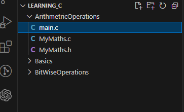

Lab 3: Arithmetic Operations
Task 1
Write a program with functions to perform basic arithmetic operations (addition, subtraction, multiplication, and division). Each operation should be in its own function.
-
Open a new folder called
Arthimetic Operations -
Create a new header file by following the images below, and call the file
MyMaths.h,MyMaths.c, andmain.c:- 
-
Next create a Guard for the new header file:
-
Now we are ready to place declare for reference various arithemtic functions. Add the following functions where the parameters are
floats:- add
- subtract
- multiply
- divide
- square
-
To provide the actual code for each of these prototype functions in
MyMaths.h, modify theMyMaths.cfile. -
Modify the content on
MyMaths.cso that itincludestheMyMaths.hfile: -
Now start to build out the functionality of each of the arthimetic functions you declared in the
MyMaths.hfile:- add
- subtract
- multiply
- divide
- square
-
Go back to
main.cand modify the contents so that itincludesMyMaths.hand remove the code in side themain()block (keeping thereturn 0;), do this now: -
Declare two
floats asnum1andnum2initialising them with the value0.0finside ofmain(): -
Using
printf, request the user to enter two numbers, where second number that must be greater than zero. Then usingscanfread what the user inputted and assign those two numbers tonum1andnum2. -
Reproducing the following format perform each of the arithmetic operations on the supplied numbers, you will need to do square twice, one for each number:
printf("<Arithemtic Operation>: %.2f + %.2f = %.2f\n", num1, num2, arithmeticOpeation(num1, num2));Code: A solution... [23 lines]
int main(){ float num1 = 0.0f, num2 = 0.0f; printf("Enter two numbers, the second number must not be zero: "); scanf("%f %f", &num1, &num2); printf("Additon: %.2f + %.2f = %.2f\n", num1, num2, add(num1, num2)); printf("Subtraction: %.2f - %.2f = %.2f\n", num1, num2, subtract(num1, num2)); printf("Multiply: %.2f * %.2f = %.2f\n", num1, num2, multiply(num1, num2)); printf("Divison: %.2f / %.2f = %.2f\n", num1, num2, divide(num1, num2)); printf("squared: %.2f * %.2f = %.2f\n", num1, num1, square(num1)); printf("squared: %.2f * %.2f = %.2f\n", num2, num2, square(num2)); return 0;

Task 2
Let's further modify the solution so we can do some meaningful programming. In this task you will create a temperature conversion tool.
- Create a new Header file and c file in the respective locations called:
TemperatureConversion.hTemperatureConversion.c

-
Open
TemperatureConversion.hand add the guard for this file. -
Inside the block ifndef block define the functions to convert to and from fahrehnhiet, celcius and kelvin, so there should be six functions altogether. The functions should return a
floatand take only onefloatas an argument:Code: A solution... [13 lines]
#pragma once #ifndef TEMPEATURECONVERSION_H #define TEMPEATURECONVERSION_H double fahrenheitToCelcius(double fahr); double fahrenheitToKelvin(double kel); double celciusToFahrenheit(double cel); double celciusToKelvin(double cel); double kelvinToCelcius(double kel); double kelvinToFahrenheit(double kel); #endif // TEMPEATURECONVERSION_H -
Next build up the
TempeatureConversion.cfile:-
include the
TemperatureConversion.hfile -
use the following formulas to convert between each temperature:
-
Fahrentheit to:
-
\( Celcius = \left(\frac{5.0}{9.0}\right) \cdot (fahr - 32.0)\)
-
\(Kelvin = \left(\frac{(fahr -32.0)}{1.79999999}\right) + 273.15\)
-
-
Celcius to:
-
\( Fahrenheit = \left(cel \cdot \left(\frac{9.0}{5.0}\right)\right) +32.0\)
-
\( Kelvin = cel + 273.15\)
-
-
Kelvin to:
-
\( Celcius = kel - 273.15 \)
-
\(Fahrenheit = ((kel - 273.15) * 1.8) + 32.00 \)
-
-
Code: A solution... [25 lines]
#include "TemperatureConversion.h" double fahrenheitToCelcius(double fahr) { return (5.0 / 9.0) * (fahr - 32.0); } double fahrenheitToKelvin(double fahr){ return ((fahr - 32) / 1.79999999) + 273.15; } double celciusToFahrenheit(double cel){ return (cel * (9.0 / 5.0))+ 32.0 ; } double celciusToKelvin(double cel) { return (cel + 273.15); } double kelvinToCelcius(double kel) { return (kel - 273.15 ); } double kelvinToFahrenheit(double kel) { return ((kel - 273.15) * 1.8) + 32.00; } -
-
Navigate to
main.cand include theTemperatureConversion.hfile underneath#include <stdio.h>line. -
Continuing lets comment out the previously written code for future reference incase we need it. Above the
float num1 = 0.0f, num2 = 0.0fline add a/*place the proceeding*/on the last line of code in this block above thereturn 0; -
To use our temperature functions, reproduce the following line and then replicate for the other temperature functions. I would suggest starting in the whitespace between
int main(){and the/*line:float num1 = 100.0f; printf("Fahrenheit to Ceclius: %.2fF -> %.2fC \n", num1, fahrenheitToCelcius(num1));Remember that the functions you have implemented return a double, so the second format specifier ,
%.2fwill be the returned value.Code: A solution... [20 lines]
... int main(){ float num1 = 100.0f; printf("Fahrenheit to Ceclius: %.2fF -> %.2fC \n", num1, fahrenheitToCelcius(num1)); printf("Fahrenheit to Kelvin: %.2fF -> %.2fK \n", num1, fahrenheitToKelvin(num1)); printf("Ceclius to Fahrenheit: %.2fC -> %.2fF \n", num1, celciusToFahrenheit(num1)); printf("Ceclius to Kelvin: %.2fC -> %.2fK \n", num1, celciusToKelvin(num1)); printf("Kelvin to Farhenheit: %.2fK -> %.2fF \n", num1, kelvinToFahrenheit(num1)); printf("Kelvin to Ceclius: %.2fK -> %.2fC \n", num1, kelvinToCelcius(num1)); /* ... */ return 0; } -
Run the code and you should see the following output:

Congratulations you reached the end of the guided part of the lab, now try and do point 21 below.
-
If you get to here try and modify the code so that you can convert from above temperature units to Rankine and vice versa, the following formulas will help you:
-
Rankine to:
- \(Celcius = (R − 491.67) \cdot \left(\frac{5}{9}\right) \)
- \(Fahrenheit = R − 459.67\)
- \(Kelvin = R \cdot \left(\frac{5}{9}\right)\)
-
... to Rankine = :
-
\(Celcius \cdot \left(\frac{9}{5}\right) + 491.67\)
-
\(Fahrenheit + 459.67\)
-
\(Kelvin * 1.8\)
-
Code: TemperatureConversion.c ... [22 lines]
... double fahrenheitToRankine(double fahr) { return fahr + 459.67; } double celciusToRankine(double cel) { return (cel * (9 / 5) + 491.67); } double kelvinToRankine(double kel){ return kel * 1.8; } double rankineToFahrenheit(double ran) { return ran - 459.67; } double rankineToCelcius(double ran){ return (ran - 491.67) * (5 / 9); } double rankineToKelvin(double ran){ return ran * (9 / 5); }Code: TemperatureConversion.h ... [5 lines]
... double fahrenheitToRankine(double fahr); double celciusToRankine(double cel); double kelvinToRankine(double kel); double rankineToFahrenheit(double ran) ; double rankineToCelcius(double ran); double rankineToKelvin(double ran);Code: ArithmeticOperations.c ... [13 lines]
... printf("Fahrenheit to Rankine: %.2fF -> %.2fR \n", num1, fahrenheitToRankine(num1)); ... printf("Ceclius to Rankine: %.2fC -> %.2fR \n", num1, celciusToRankine(num1)) ... printf("Kelvin to Rankine: %.2fK -> %.2fR \n", num1, kelvinToRankine(num1)); printf("Rankine to Farhenheit: %.2fR -> %.2fF \n", num1, rankineToFahrenheit(num1)); printf("Rankine to Ceclius: %.2fR -> %.2fC \n", num1, rankineToCelcius(num1)); printf("Rankine to Kelvin: %.2fR -> %.2fK \n", num1, rankineToKelvin(num1)); -